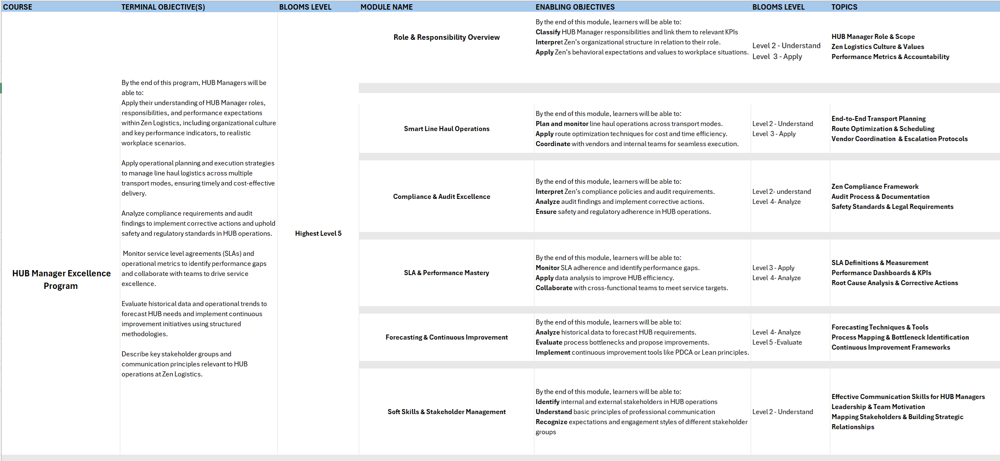

🎓 In-Class Assignments – Instructional Design Portfolio
During my Instructional Design (ID) certification program, I completed several hands-on assignments that applied ID theories and models to real-world training contexts.
This section of my portfolio highlights key in-class activities such as
Curriculum Design and Storyboarding projects — each reflecting the use of
ADDIE, Bloom’s Taxonomy, and adult learning principles in practice.
🧩 Curriculum Design – Logistics Company
Project Context:
As part of the curriculum design assignment, I developed a structured learning program for a logistics organization,
Zen Freight Solutions. The goal was to create a training curriculum for Hub Managers to
understand their roles, key responsibilities, KPIs, and organizational values within Flash Logistics.
✳️ Curriculum Overview
- Designed following ADDIE and Bloom’s Taxonomy frameworks.
- Focused on bridging learning objectives with business outcomes in the logistics domain.
- Structured to suit both ILT (Instructor-Led) and VILT (Virtual Instructor-Led) delivery formats.
📘 Module Highlight – Role & Responsibility Overview
| Element | Description |
|---|
| Duration | ~45–50 minutes |
| Topics | Welcome & Context, Hub Manager Role, Flash Logistics Culture |
| Learning Modes | Virtual Asynchronous + ILT discussion |
| Instructional Strategies | Visual storytelling, case-based learning, micro-scenarios |
| Interactivities | Drag-and-drop role-KPI mapping, click-to-reveal flashcards |
| Assessment | Scenario-based formative checks with feedback |
| Theme | Corporate logistics visuals (trucks, warehouses, maps) |
📄 Full Curriculum Design & Detailed Design Document (DDD):
🔗 View on Google Drive

🎬 Storyboarding for ILT Session – Google Pay Training
📘 Project Overview
This project is an Instructor-Led Training (ILT) storyboard designed to teach first-time users how to make safe and simple payments using Google Pay.
The storyboard follows Gagné’s 9 Events of Instruction to ensure structured learning and engagement.
🎯 Learning Objectives
- Install Google Pay on an iPhone.
- Make payments using a QR code and a mobile number.
- Apply safety measures while using Google Pay.
- Practice sending and receiving money through a guided activity.
👥 Target Audience
Beginner users, including elderly learners, who are new to mobile payments.
🧩 Design Approach
- Framework: Gagné’s 9 Events of Instruction (attention, objectives, guidance, practice, feedback, retention).
- Mode: Instructor-Led Training (ILT) with interactive discussions, video demo, role play, and reflection.
- Tools Used: MS PowerPoint for storyboard development.
🌟 Key Highlights
- Interactive Opening: Question-led discussion to gain attention.
- Demo Video: Step-by-step installation on iPhone via YouTube.
- Practice Activity: Role play with ₹1 transfer for hands-on experience.
- Safety Focus: Do’s ✔️ and Don’ts ❌ slide for digital security.
- Reflection Tool: 3–2–1 review activity to reinforce learning.
📂 File Included: GPay_SB.pptx – Storyboard file (PowerPoint)
Takeaway: This storyboard demonstrates how Instructional Design principles can transform a simple digital skill (using Google Pay) into an engaging, safe, and learner-friendly session.
Assumption: Learner has iPhone and Google account.
📄 Storyboard Reference:
🔗 View on Google Drive

🧠 Reflection
These in-class assignments helped me strengthen my understanding of:
- Translating learning needs into measurable objectives.
- Designing curriculum and storyboards that align with organizational goals.
- Integrating interactivity and learner engagement strategies in both ILT and eLearning contexts.
💡 This page is part of my Explore Portfolio, showcasing my learning journey and project work in Instructional Design.